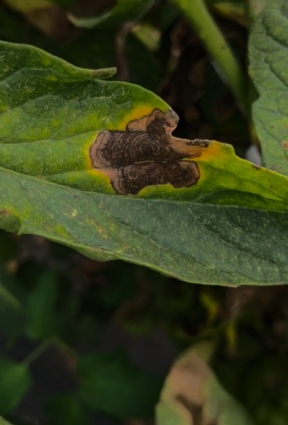

Troubleshooting Common Problems
Welcome to the Troubleshooting Page of Foliage—your go-to for resolving plant care issues!
Overwatering

Overwatering is a frequent issue that can suffocate roots and cause root rot. Symptoms include yellowing leaves, wilting, and a foul smell from the soil. To address this, check the soil's moisture level; if it's overly wet, allow it to dry out completely before watering again. Ensure that your pots have adequate drainage holes and use a well-draining potting mix to prevent water accumulation. Adjust your watering schedule according to the plant's specific needs and the humidity levels in your home.
Underwatering

Underwatering can lead to dehydration, resulting in brown, crispy leaf tips and drooping foliage. To troubleshoot this issue, check the moisture level of the soil; if it's dry an inch below the surface, it’s time to water. Water the plant thoroughly until moisture drains from the bottom of the pot. Establishing a consistent watering routine based on the plant’s needs and the environmental conditions in your home will help maintain optimal hydration.
Pest Infestation
Pest infestations can harm your plants by sucking nutrients and causing damage. Common pests like aphids, spider mites, and mealybugs can lead to leaf drop, sticky residue, and visible insects. Regularly inspect your plants for signs of pests and treat any infestations promptly with insecticidal soap or neem oil. It’s also a good idea to quarantine infested plants to prevent the spread of pests to your other plants. Maintaining healthy plant conditions can help deter future infestations.
Insufficient Light
Insufficient light can result in weak, leggy growth and dropping leaves as plants stretch toward light sources. To remedy this issue, evaluate the light conditions in your home. If your plant is in a low-light area, consider moving it to a brighter location. Choose plants that thrive in the available light, and rotate them periodically to ensure even exposure to sunlight. Proper light levels are crucial for healthy photosynthesis and overall plant vitality.
Nutrient Deficiency
Nutrient deficiencies can manifest as pale leaves, stunted growth, or leaf drop. Plants require essential nutrients for healthy growth, and lacking these can hinder their development. To combat nutrient deficiencies, apply a balanced fertilizer during the growing season to provide necessary nutrients. Additionally, test the soil pH to ensure it’s within the ideal range for your specific plants, as improper pH levels can limit nutrient absorption. Research the nutrient needs of your plant species for tailored care.
Temperature Stress
Temperature stress can cause curling leaves and slow growth due to extreme temperature fluctuations. Most indoor plants thrive between 65°F and 75°F. To prevent temperature stress, position plants away from drafts, heating vents, and cold windows that can create unfavorable conditions. Monitoring humidity levels is also important, as dry air can exacerbate temperature-related stress. Ensuring a stable environment will promote healthier growth and resilience in your plants.